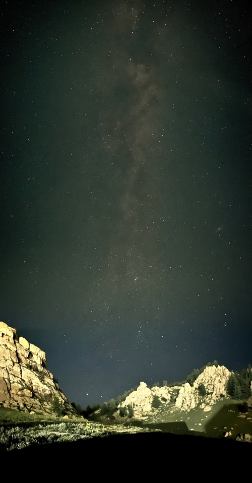
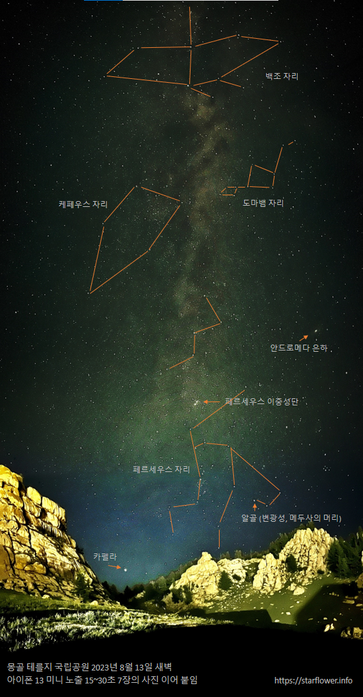

| 2023년 08월 11일 |
ICN, UBN 징키스칸공항, 로컬 마트, 테를지국립공원 Energy Hill Resort, 낙타바위, 거북바위, 아리야발사원 |
| 2023년 08월 12일 |
승마, 리조트 뒷산 하이킹, 푸르공 |
| 2023년 08월 13일 |
칭기스칸 마상 동상, 자이승 전승 기념탑, 이태준 열사 기념공원, 국영백화점, 몽골국립박물관, 수흐바타르 광장, 오로라호텔 |
| 08월 14일 | 고비 캐시미어 팩토리, 샹그릴라 몰, 국영백화점 앞 노점거리, 블루스카이 호텔 |
| 08월 15일 | UBN, ICN |
|  |  |
| 아이폰 13 Mini 천체사진 모드 노출 15~30초 | 갤럭시 퀀텀2 프로모드 노출 30초 |